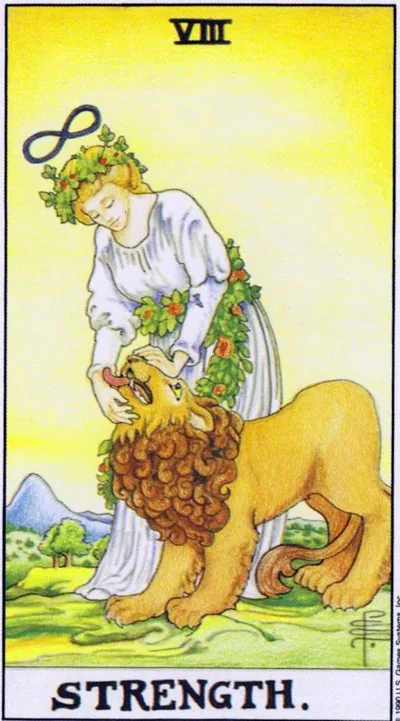

Major Arcana · VIII
VIIIStrength
The real power is soft: the beast is tamed not by whiplash, but by calm breathing and patience; endurance, self-control and compassion take what the hardest pressure would not take.
Archetype and core meaning
A woman in a wreath of roses effortlessly closes the lion's mouth; the infinity sign above her head says that the source of this power is not muscles. The lion is our passions, instincts and fears; they are tamed not by prohibition, but by tame: the beast gives strength to those who do not fear or humiliate him.
After the victory chariot, the arcana teaches the next level of skill: to win without fighting. It's the resilience of long-term tension, the ability to withstand the anger of others without responding in kind, to remain calm where the fists would be easier. The card promises that gentleness in this story is not weakness, but the highest form of control.
Daily life
A day when the little things are annoying: traffic jams, queues, other people's slowness — the card offers a training of self-control instead of a flashback. There are things that require patience: long conversations with children and the elderly, monotonous work, caring for animals and plants. A great day to apologize first or to extinguish an incipient quarrel with a smile. In the evening — physical discharge: accumulated in a day will find a way out of itself, if not helped.
Work and career
At work, arcana means a situation where the result is not pressure, but influence: a complex client, a capricious manager, a conflicting colleague — everyone copes with a calm, consistent tone. Favorable time for painstaking tasks that require endurance: long negotiations, training newcomers, quietly correcting other people's mistakes without public confrontation. But do not confuse patience with endless compliance: mark boundaries quietly and firmly.
Relationships
In relationships, Strength is the art of taking a partner alive: with a character, habits and moods, without trying to rewrite him to yourself. The card is good for couples in turbulence: tenderness and humor extinguish quarrels more effectively than judging who is right. For single people, she advises you to look at restrained adults next to you, not spectacular lions: passion is tested for years, not the first date. Shadow is to endure the unacceptable: to tame the beast does not mean to live in a moat.
Health
The card is about the heart and the spine, which is what rocks and holds: back exercises and soft cardio in joyful mode are useful. The emotional component is more important than stress: chronic suppression of anger hits the heart and blood pressure more noticeable than fatty foods. A good period for dealing with addictions: daily soft struggle with habit wins jerks and breaks.
Spiritual meaning
The way of Tet, the snakes, connects Gebura and Hesed: a force flowing between severity and mercy, like a snake between stones. The lion and the infinity sign make the arcana a card of working with fire energy: breathing practices, working with instincts, everything where power requires tame, not locking.
Failure to control the beast: outbursts of anger and rash actions, for which then shame, or suppressed emotions, self-doubt and resource, exhausted to the bottom.
Archetype and core meaning
The reversed Force is a malfunction of the beast. The first scenario is that the lion has broken out -- outbursts of anger, breakdowns, rash acts that are then shameful. The second is that the lion is on chains -- emotions are crushed, desires are forbidden, the person lives on pain-relieving wills and calls it calm.
Often, the card speaks of a compromised confidence: the eternal comparison of oneself with others, the imposter syndrome, the fear of appearing weak, which is masked by rudeness and painful acquiescence. Energyly, this exhaustion is a resource that has been taken on credit for too long. Arkan advises against heroizing survival: recovery is also a work of strength, sometimes the most difficult.
Daily life
In everyday life, the day of low brightness: everything is infuriating, any "no" is perceived as a personal insult, and there is no strength to restrain yourself, hence the breakdowns on cashiers and loved ones. Or vice versa: apathy, when even the series watch laziness, and desires are silent. The first means is to slow down before it breaks: sleep, food, water, no important conversations on the hungry nerve. The second is a small honest pleasure without excuses: it brings to life faster than self-flage.
Work and career
At work, the inverted Force is a resource at zero: tasks that were easy yesterday are annoying today, mistakes are falling over loss of concentration; there may be a crisis of confidence after public failure: criticism beats harder than usual, and hands drop; dangerous and the reverse strategy is to push, scream, push: short-term work, long-term burns the team and you.
Relationships
In relationships, the card shows two damages: flashes and humiliations, after which the loved one walks quietly, or complete numbness of feelings when both live as neighbors. Jealousy and possessiveness are typical masks of fear of “I’m not good enough.” And there is also fatigue from patience: for years, the corners were smoothed out, and today the cup is overflowing.
Health
Bodily suppressed or raging elements hit the heart, blood vessels and hormonal system: panic attacks, tremors, lumps in the throat, appetite swings. Chronic self-repression is a known factor of hypertension and digestive problems: the body continues to scream until it is heard. Immunity decreases - everything that was dormant worsens. The arcana recipe: daily gentle discharge of anger - sports, paper, screaming in the car - full sleep and abandoning the role of the eternal hero: recovery begins with permission to be tired.
Spiritual meaning
The spiritually upside down Tet is a snake biting its tail: energy locked in fear or released unconscious. The card indicates a fear of its own power: a person feels the beast in himself and therefore keeps him hungry, and a hungry beast sooner or later tears the chain. In practice, it warns of violent awakening techniques — forced work with fire burns.
🌿 In brief
The main idea
Force is not suppression or violence; it's the ability to negotiate with your own power. The lion doesn't have to growl all the time. Real power comes from being able to control your desires calmly.
How it manifests
Charisma, courage, sexuality, naturalness, creative fire, the desire to do things because they really like it.
Work.
A bright leader who is able to engage others with his own energy.
In a relationship
Sincere desire, sexuality, courage to be yourself.
The shadow side
Passion gets out of control: greed, lust, impulsivity, attention, star disease.
Feature of the school
The Force is connected with the Lion and the V House, and the main task is not to suppress your lion and not let it eat you.
📜 In detail — lecture extracts
Essence of the card
Force is not muscles, but action applied to something: “There is no force unattached anywhere”; any action is an effect on another person. The main character of the card is not a lion or a girl, but the force itself in the interaction of the consciousness-sun and natural human passions. The girl “closes the lion’s mouth” rather than tearing it up like Hercules or the Marseilles Tarot, acts by the force of calming, the leash is the garland of flowers. From Waite he deduces the key the the the thesis of the school: the lion is our passions, and the Force is “the most difficult to do without them”; “the expression of force is often to do it; it is much more difficult to do without them.”
Upright position
- There is no separate list of meanings in the lecture – the card is given through four themes-elements (social / personal, work / home) and “the feeling of the fifth home”.
- - Work, society: a bright charismatic personality who does "as he likes." Contrast with the Chariot: a realtor on the Chariot works according to the established standard scheme, and on the Force - is burning with desire, puts his soul ("let's repaint this wall - the apartment will sell better"). The principle of power = the principle of management: the solar "lion boss" is passionate ("let's all we can together"), but "the lion roars not for someone to listen, but because he wants to grunt."
- - Field of the fifth house: activities "in the focus of others" - public speaking, self-demonstration, acting (personal experience of the student theater), teaching, sports (sport = fun, "for sport"), hobbies, obsession with the opposite sex ("shooting eyes so that men fit into the pile"), children, games, gambling, trading.
- Finance, property: gold is the traditional meaning of the sun and the lion, "contained potential": money decides everything. Real estate is the hidden value that is revealed at the decisive moment (a glossy apartment after the show "will play", the center of Moscow is better to hold) Sell at the right moment: "If you really want to sell the apartment, sell cheap."
- Emotions, personal life: courage, courage, naturalness, sexuality; sincere manifestation of desires; lion is a pride animal, takes into account the opinion of his own.
- Self-development: disclosure of talent, creativity, self-expression -- throwing wood into the fire of desire, you can't stop. The age focus of school: at 28 years old, work and family, at the transition of 28→30 people look for themselves and rethink skills in interaction with others.
Negative meaning
Negatives are adjectively defined as "it is, if it is in the negative, it is lust."
Passions lose control: greed ("the left wants more and more all the time"), impulsive "wanted - done." Star disease is the “cause of the lion’s problems”: working for the public for the sake of fame in itself (celebrity is only a side effect of the matter to the liking); the flip side of appearance is the desire to hide: “you do not always want to be in sight.” Excessive desire puts pressure on the situation: the apartment was sold cheaply because “I wanted to quickly”. The over-extending of a stick (the example of the school is Crowley) and the opposite extreme is the medieval mortification of the flesh by torture; both extremes depart from the school principle of “to negotiate with one’s lion amicably.”
School emphases and distinctive points
- The Middle Ages are the Age of Power, Justice = the Right of the Strong; Waite painted the deck at the turning point of the ages, when the manifestation of strength is “more weakness.” The school supports Waite and the development chain Chariot → Power → Hermit → Justice on XI (it requires an analysis of the mechanism of the world – the Wheel of Fortune).
- - Astrology of his system (Western, "not author's, just logical"): VIII larcana = V house + Leo; solar freedom against the lunar cycles of the Chariot ("house-work-borscht-slippers"). Anecdote: "I'm not a real welder", I'm not an astrologer.
- Lemniscata overhead - an endless cycle of development (the same in the Magician / I house; encrypted - in the angel with bowls during the transition Scorpio → Sagittarius); the entrance to the second third of the zodiac - the stage of formation.
- Mythology: Inanna/Ishtar is the goddess on the lion (fertility + war, patroness of temple prostitutes, "courtisan of the gods"), parallel to Venus/Aphrodite; "female power is in weakness, beauty, ability to seduce." Leo is the main beast of the bestiaries, a symbol of power: the thrones of Solomon, French kings, bishops; Tetramorph is the evangelist Mark; the dark line is the symbol of the Antichrist, the chthonic roar.
- Crowley is the main antithesis: Lust's arcana, the seven-headed beast, the Babylonian whore; thelema grew out of Rabelais ("Do what you will"), true will = calling. Biography explains the deck: his mother called him "the child of the Antichrist," hence the conclusion of the school is to bring up children softer. Own formula: the perfect card of the Force is the middle between Waite and Crowley (Waite - "pink snot", Crowley - "toothrowley - "t's too Babylonian whoree").
- Sol Invictus / Mithras / Helios: the invincible sun of Aurelian (274), which competed with Christianity; attribute - a golden chariot (link with the past arcana); Dürer painted justice riding on a lion; Christ = reborn Helios (Zeus became God-Father); the Church rethought solar festivals (analogue of Maslenitsa in Russia); Helios raised from the bottom the island of Rhodes (Coloss) - the the the the theme of the development of his civilization.
- Alchemy and children's literature: green lion of Marseille Tarot - universal solvent, "our mercury", biting the sun (Rosarium philosophorum; gratitude: Arzamas website, Sergey Zotov); green crocodile Chukovsky reads as passions, absorbing the consciousness of the sun.
- - "Second Fire": the first fire of Aries/Maga is an accidental lightning bolt for one; the second, lion fire is a fire brought into a cave for the sake of family and tribe, requiring night watch ⇒ profession, specialization, conscious understanding of their business.
- - Slavic series: "Ivan Tsarevich and the Grey Wolf" - the archetype of the helper-beast: threat with weapons → "I still need to come in handy"; the ability to negotiate with a wild beast = a real hero (Hercules kills - "the force according to Crowley"). Dead water, then living - a hint of the opposite house of Aquarius.
- Modern images: comics as a continuation of the lubricant and storytelling; Hulk, Jekyll and Hyde; Superman and Batman - Chariot card (hereditary power, double personality), but Tony Stark - "true lion": goes public - "Iron Man is me", pride in the fact that he created himself: "my superpower - mind, it can not be taken away from me"; Kirkorov - "more lion", Rastorguev closer to the Chariot.
- Practice: understand parents, only becoming them; the power to apply calmly - "calm children, not punish with a belt"; Sun / Ascendant in Leo - not an indicator of celebrity, fame is only a side effect.
Keywords
- The power of calming; second fire; restrained potential; action in the spotlight; self-demonstration; pride; garland of flowers; hidden cost; naturalness; star disease; "do what's high."
- ---